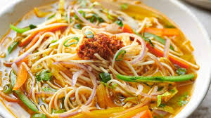

Thukpa

- Ingridents
- Noodles
- Soy Sauce
- Vegetables (carrot, cabbage, capsicum, onion etc.) /Chicken
- Spices i.e Salt,Chiili powder, Cumin Powder, Turmeric
- Tomato Paste
- Beans
- Oil
- Black pepper
- Ginger, Garlic
- Water
- Reciepe
- Boil noodles.
- Heat oil in pot & saute onion, ginger, garlic and chilli.
- Add tomato and cook until soft.
- Add all vegetables/ Chicken. Stir fry for 2 to 3 mins.
- Add water, salt, pepper and soy sauce.Boil 5 to 7 mins.
- Add boiled noodles and cook 2 more minutes.
- Garnish with spring onion and serve hot